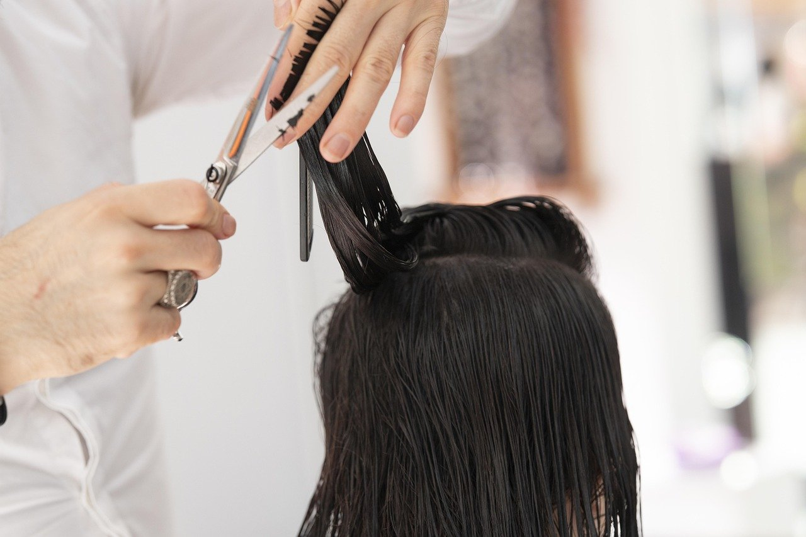
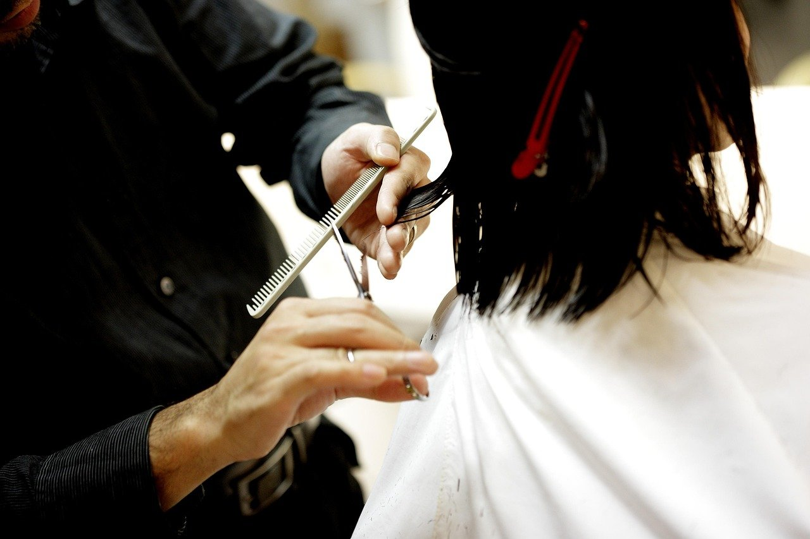
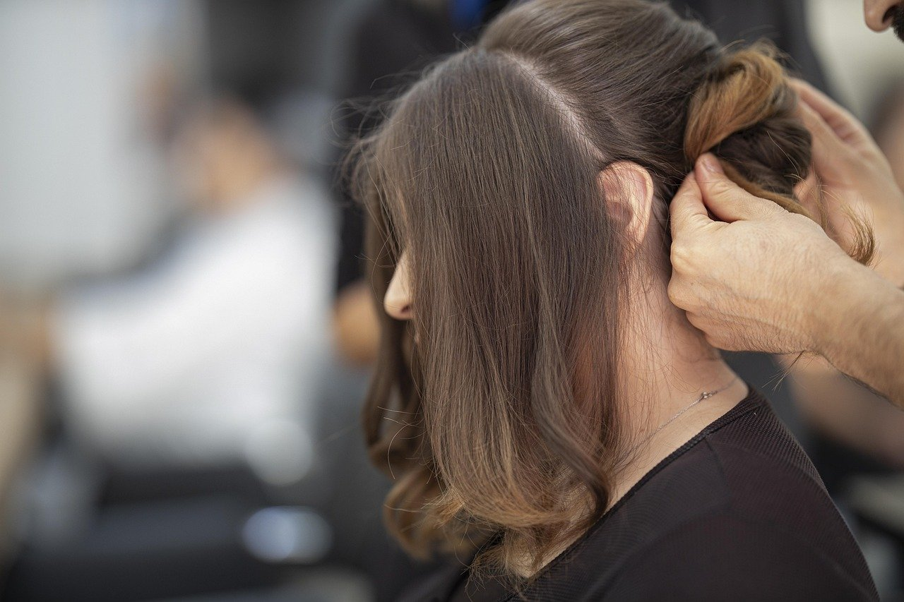
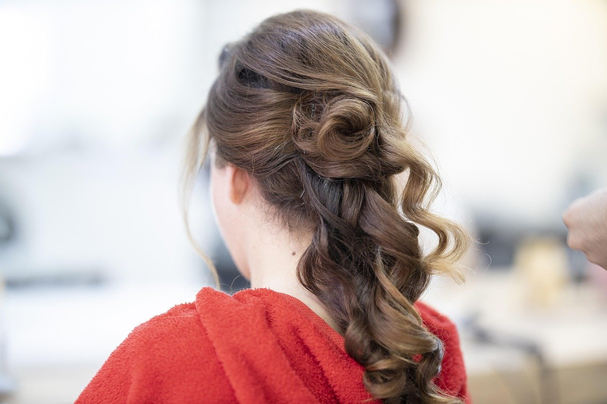

Coafură în Iași, pe Alexandru cel Bun
Denis Stil

La Denis Stil se tunde, se spală și se coafează părul femeilor, al bărbaților și al copiilor, pe Bulevardul Alexandru cel Bun 64, în Iași.

Un salon de coafură pe Alexandru cel Bun
Denis Stil este un salon de coafură pe Bulevardul Alexandru cel Bun 64, în Iași. Programul începe dimineața la 08:30 și ține până seara, așa că poți veni înainte sau după serviciu.
Ne spui cum porți părul de obicei și ce ai vrea să schimbi, iar înainte să începem stabilim împreună forma.
- Deschis și sâmbăta
- De luni până vineri între 08:30 și 20:00, sâmbăta între 08:30 și 19:00.
- Pe Alexandru cel Bun
- Pe Bulevardul Alexandru cel Bun 64, în Iași.
- Salon primitor
- O atmosferă liniștită și confortabilă cât timp stai pe scaun.
Servicii
Coafură pentru toată familia, de la tunsoarea celui mic până la coafatul pentru o seară în oraș.
-
Coafură pentru femei
Tuns, coafat și aranjat părul, pentru o zi obișnuită sau pentru o ocazie.
-
Coafură pentru bărbați
Tuns și aranjat, scurt sau mai lung, după cum îți place să-l porți.
-
Coafură pentru copii
Tuns pentru cei mici, cu răbdare și fără grabă.
-
Spălat și coafat
Spălat, uscat și coafat, ca să pleci din salon cu părul gata aranjat.
Prețurile le afli la telefon.
Sună acumDin salon
Fotografii ilustrative. Apasă pe o imagine ca să o vezi mai mare.


Telefon și adresă
Sună-ne pentru orice întrebare despre serviciile de coafură.